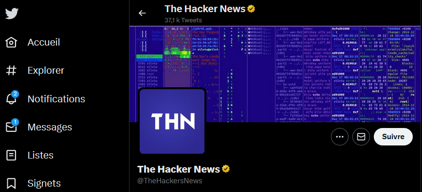
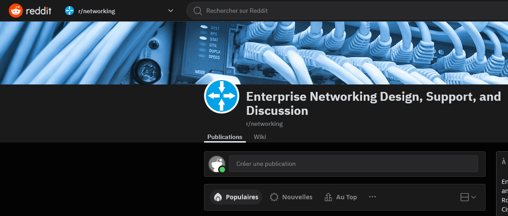
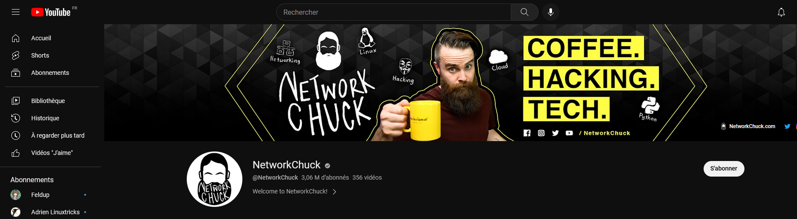
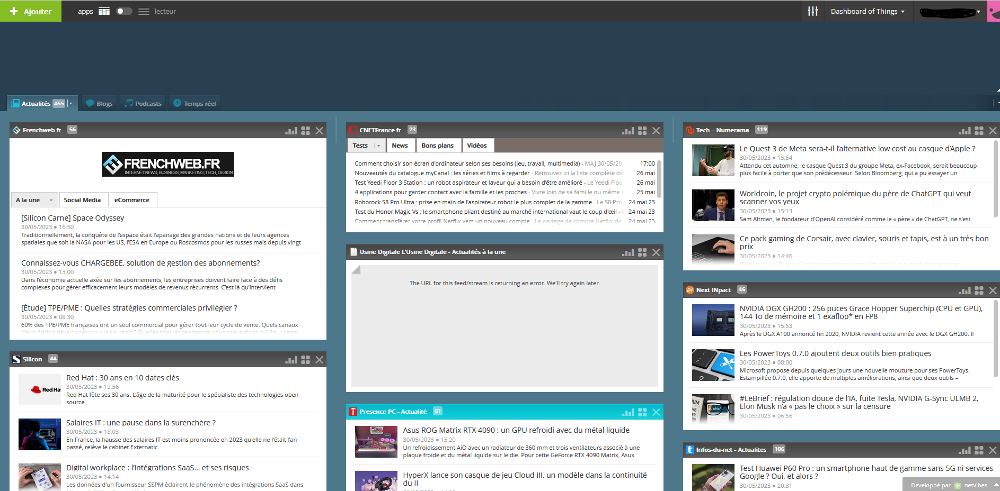

Veille Technologique
Le principe:
Une veille informationnelle est
l’ensemble des stratégies mises en place pour rester informé, en y consacrant le
moins de temps possible et en utilisant des processus de signalement automatisés. C'est à dire, identifier les contenus les plus
pertinents pour le domaine concerné de notre organisation, les trier, les organiser,
les classer, les mettre en forme puis les partager notamment avec son réseau.
Comment trouver des informations qualitatives ?
Une information doit remplir 3 qualités :
La pertinence : une information pertinente fournit des éléments de réponse aux questions
que se pose l’entreprise et est filtrée en fonction de l’utilisateur.
La fiabilité : l’information fiable est exacte, précise, complète et à jour.
La disponnibilité: une information est disponible si l’utilisateur y accède au bon moment,
au bon endroit et sous une forme directement exploitable.
Comment séléctionner les bonnes informations ?
Il faut séléctionner ses sources en regardant la réputation de l'auteur, l'indépendance de la source, l'objectivité de l'information, sons exactitude et son actualité. Vous trouverez ci-dessous une présentation de differentes sources exploitables sur le clear et le darkweb
Présentation sur les sources
Quels autres outils utiliser ?
L'utilisation des réseaux sociaux est une composante incontournable de la stratégie de veille, comme
Twitter

Reddit

YouTube

En plus des réseaux sociaux, j'utilise également un agrégateur de flux tels que Netvibes pour automatiser mon information
